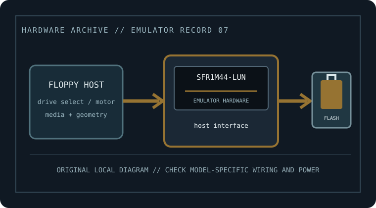

[ FLOPPY EMULATORS // IDENTIFIED HARDWARE ]
Gotek SFR1M44-LUN 1.44 MB USB Floppy Emulator
A model-specific record for physical floppy-drive emulation hardware. It distinguishes host-side floppy signaling from USB/flash image storage; model suffix, harness, and firmware matter for fit.

MODEL IDENTIFICATION: SFR1M44-LUN — Gotek SFR1M44-LUN 1.44 MB USB Floppy Emulator. Compatibility depends on the exact host, connector, signals, firmware, and image preparation; a matching nominal capacity alone is not enough.
Recorded specifications
| Cataloged part / SKU | Gotek SFR1M44-LUN 1.44 MB USB Floppy Emulator |
|---|---|
| Manufacturer | Gotek |
| Product family | 3.5-inch, 1.44 MB knitting-machine-specific USB replacement |
| Drive bay / physical fit | 3.5-inch class; match the machine’s bracket/bezel and connector position. |
| Host interface | Manufacturer listing targets MULLER3, STAUBLI-JC5, BONAS, and STOLL flat-knitting machines. Use the exact machine harness and documented connection. |
| Supported floppy formats | Nominal 1.44 MB HD virtual disk capacity. Accepted raw image format and file-system/recording details must match the knit machine’s original floppy format and firmware. |
| Image / storage handling | USB flash storage with vendor firmware; image naming, slot selection, and transfer procedure are defined by the product manual. |
| Disk-select / drive wiring | Use the designated LUN harness and exact target machine pinout; verify DS, motor, ready/disk-change, density, and connector orientation. Do not treat similar 34-pin headers as proof of identical wiring. |
| Power | Only use the supply input specified for this LUN unit and harness. Confirm voltage/polarity from the manual and host service documentation. |
| Host compatibility | Limited to the specific supported machine/controller configuration; manufacturer product title lists several knitting-equipment families but does not guarantee every machine revision. |
Compatibility, installation & caveats
Before installation, compare the emulator’s exact revision and harness against the host service documentation. Confirm connector keying and pin one, power voltage and polarity, drive-select state, motor/disk-change signals, expected density, and image geometry. Preserve a read-only copy of original disks and configuration files before experimenting.
- Machine-specific data formats and write behavior can differ from DOS FAT12; preserve originals and test with a copied disk/image first.
- Firmware changes can alter accepted image types, read/write behavior, and host timing. Record the installed firmware and test only with copies before relying on it.
- These devices emulate sector-level floppy behavior, not a magnetic medium. For preservation of nonstandard tracks, copy protection, or forensic evidence, use a flux-capable capture workflow and retain its raw captures.
Sources & further reading
- Gotek — SFR1M44-LUN product listingManufacturer listing identifying the specific model and its intended class/application.
- Gotek — FU Version user manual (family guidance; confirm LUN machine harness)Manufacturer family guidance; confirm the exact model variant, harness, media preparation, wiring, and power before installation.
- Gotek — manuals and setup downloadsManufacturer download index for choosing the exact emulator variant and its supported USB workflow.
Manufacturer statements are not a guarantee for every machine revision. Check the actual device label, harness, host service manual, and firmware before connecting.